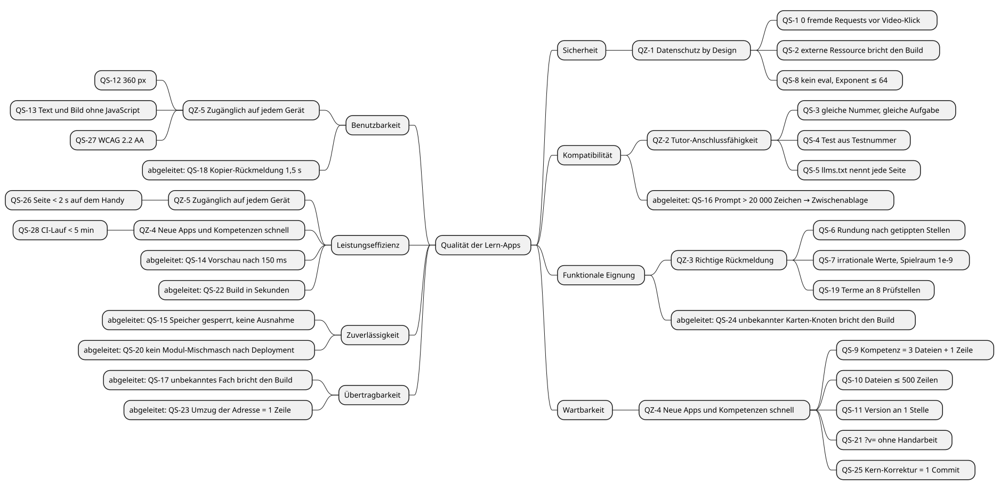

Qualitätsanforderungen: Jede Zahl stammt aus dem Code oder aus einer Messung
Die Szenarien machen die Qualitätsziele aus Kapitel 1.2 prüfbar. Jede Messgröße ist eine Konstante oder Regel aus dem Code, eine datierte Messung oder ein Zielwert des Product Owners; die Spalte „Antwortmaß“ nennt den Beleg. Die Zielwerte für Ladezeit, Barrierefreiheit und CI-Dauer hat der Product Owner am 23.09.2026 festgelegt (QS-26 bis QS-28). Die IDs der Vorlage bleiben; QS-9, QS-11, QS-13, QS-17 und QS-21 sind auf das Monorepo umgeschrieben, QS-22 bis QS-28 sind neu.
Qualitätsbaum: Alle acht Merkmale nach ISO/IEC 25010
| Merkmal (ISO/IEC 25010) | Bezug | Szenarien |
|---|---|---|
Sicherheit |
konkretisiert QZ-1 |
QS-1, QS-2, QS-8 |
Kompatibilität (Interoperabilität) |
konkretisiert QZ-2; QS-16 abgeleitet |
QS-3, QS-4, QS-5, QS-16 |
Funktionale Eignung |
konkretisiert QZ-3; QS-24 abgeleitet |
QS-6, QS-7, QS-19, QS-24 |
Wartbarkeit |
konkretisiert QZ-4 |
QS-9, QS-10, QS-11, QS-21, QS-25 |
Benutzbarkeit |
konkretisiert QZ-5; QS-18 abgeleitet |
QS-12, QS-13, QS-27, QS-18 |
Leistungseffizienz |
QS-26 konkretisiert QZ-5, QS-28 konkretisiert QZ-4; QS-14, QS-22 abgeleitet |
QS-26, QS-28, QS-14, QS-22 |
Zuverlässigkeit |
abgeleitet |
QS-15, QS-20 |
Übertragbarkeit |
abgeleitet |
QS-17, QS-23 |
Qualitätsszenarien
Jedes Szenario hat sechs Teile: Quelle, Stimulus, Artefakt, Umgebung, Antwort, Antwortmaß.
| ID | Ziel | Quelle | Stimulus | Artefakt | Umgebung | Antwort | Antwortmaß (Beleg) |
|---|---|---|---|---|---|---|---|
QS-1 |
QZ-1 |
Lernende |
öffnet eine Kompetenzseite mit Video |
Layout, Kern (Video) |
Produktion, erster Besuch, Merker nicht gesetzt |
Platzhalter mit lokalem Symbol, kein iframe, kein Vorschaubild |
0 Requests an fremde Hosts vor dem Klick; danach nur |
QS-2 |
QZ-1 |
Autor:in oder KI-Agent |
fügt |
Ausgabe |
Entwicklung, |
Build bricht mit Datei und URL ab |
Exit-Code ≠ 0, 1 Fehlerzeile je Fundstelle ( |
QS-3 |
QZ-2 |
Tutor |
schickt |
Kern (Zufall), Apps |
Produktion |
dieselbe Aufgabe |
gleiche Aufgabe für gleiche Nummer; ohne Nummer 1–9999 ( |
QS-4 |
QZ-2 |
Tutor |
schickt |
Kern (Test) |
Produktion |
gleiche Aufgabenfolge bei jedem Aufruf; Ergebniszeile |
1 Aufgabe je Kompetenz im Schnelltest, 2 im Test ( |
QS-5 |
QZ-2 |
Autor:in |
legt eine Kompetenz an, ohne sie im |
Apps, Build |
Entwicklung |
Build meldet die fehlende Seite |
1 Fehler je nicht genannter Seite ( |
QS-6 |
QZ-3 |
Lernende |
tippt für 10/3 „3,33“, „3,333“, „3,34“, „3,3“ |
Kern (Zahlen) |
Übung |
richtig, richtig, falsch, Hinweis |
Standard geld 2, prozent 1, zahl 2 Stellen ( |
QS-7 |
QZ-3 |
Lernende |
tippt |
Kern (Zahlen) |
Übung |
richtig |
relativer Spielraum 1e-9; mehr als 12 Stellen gelten nicht als gerundet ( |
QS-19 |
QZ-3 |
Lernende |
tippt für „(x+3)² ausmultiplizieren“ |
Kern (Terme) |
Übung, |
richtig, Hinweis, falsch |
8 Prüfstellen, mindestens 5 gültig, Toleranz 1e-9 ( |
QS-8 |
QZ-1 |
präparierter Link oder Eingabe |
|
Kern (Zahlen) |
Übung |
„ungültig“, kein Code ausgeführt |
kein eval; Exponent ≤ 64 ( |
QS-9 |
QZ-4 |
Autor:in |
legt eine neue Kompetenz in einer bestehenden App an |
Apps, Build, Layout |
Entwicklung |
Seite, Menü, Checkliste, Test, Übersicht, Karten-Eintrag entstehen; fehlt eine Datei, bricht der Build |
3 Dateien ( |
QS-10 |
QZ-4 |
Autor:in oder KI-Agent |
eine Quelldatei wächst |
alle Textdateien |
Entwicklung, Build |
Build meldet die Datei |
höchstens 500 Zeilen ( |
QS-11 |
QZ-4 |
Autor:in |
hebt die Site-Version |
|
Entwicklung |
Footer jeder Seite zeigt die neue Version |
Version an 1 Stelle ( |
QS-21 |
QZ-4 |
Autor:in |
ändert ein Kern-Modul und deployt |
Build (Versionierung) |
Entwicklung, Build |
alle Referenzen zeigen auf den neuen Hash |
0 |
QS-25 |
QZ-4 |
Autor:in |
korrigiert einen Fehler im Kern |
Kern |
Entwicklung |
Korrektur erreicht jede App im nächsten Deployment |
1 Commit für alle Apps statt 1 je App (ADR-012; heute 3, geplant rund 20 Apps je Schuljahr) |
QS-12 |
QZ-5 |
Lernende |
öffnet eine App auf dem Handy |
Layout, |
Viewport 360 px |
alles lesbar, kein waagerechtes Scrollen |
360 px Grundlayout, breiter ab 40rem ( |
QS-13 |
QZ-5 |
Lernende, Suchmaschine, LLM |
lädt eine Kompetenzseite ohne JavaScript |
Layout, Build (Bild) |
JS aus |
Warum, Regel, Beispiel, Bild und Video-Link lesbar; Hinweis für die Übung |
5 von 6 Abschnitten statisch, nur |
QS-26 |
QZ-5 |
Lernende |
öffnet eine Kompetenzseite auf dem Handy |
Layout, Kern, Apps, GitHub Pages |
Produktion, erster Besuch ohne Cache. Annahme: langsames 4G (Lighthouse-Profil „Slow 4G“: 1,6 Mbit/s, 150 ms RTT); vom Product Owner nicht festgelegt |
Seite ist lesbar und bedienbar |
< 2 s bis die Seite geladen ist (Zielwert des Product Owners, 23.09.2026). Noch nicht gemessen; kein automatischer Test |
QS-27 |
QZ-5 |
Lernende, auch mit Screenreader oder nur mit Tastatur |
nutzt eine Kompetenzseite, den Test und die Übersicht |
Layout, Kern, |
Produktion, Handy und Desktop |
alle Inhalte und Bedienelemente wahrnehmbar, bedienbar und verständlich |
0 Verstöße gegen WCAG 2.2, Stufe AA (Zielwert des Product Owners, 23.09.2026). Der Build prüft den Kontrast der Fachfarben (≥ 4,5:1, QS-17); axe-core prüft in CI Übersicht, Karte, Start- und Testseiten und seit 25.09.2026 jede Kompetenzseite (ohne und mit geladener Übung) auf 0 schwere oder kritische Verstöße ( |
QS-28 |
QZ-4 |
Autor:in, CI |
öffnet einen PR oder merged nach |
|
GitHub Actions, Cache für docToolchain vorhanden |
Tests, Build, Prüfungen und Deployment laufen durch |
< 5 min je Workflow-Lauf (Zielwert des Product Owners, 23.09.2026). Gemessen am 23.09.2026: |
QS-14 |
abgeleitet |
Lernende |
tippt einen Term |
Kern (Eingabe) |
Übung |
Vorschau nach der Tipp-Pause |
150 ms ( |
QS-22 |
abgeleitet |
Autor:in, CI |
|
Build |
Entwicklung, WSL |
vollständige, geprüfte Site |
0,41 s für 3 Apps, Karte, 45 Seiten (Eleventy-Ausgabe, 23.09.2026); Spike vom 23.09.2026: ≈ 1,5 s für 20 Apps, Code verworfen. Zielwert für den ganzen CI-Lauf: QS-28. |
QS-15 |
abgeleitet |
Browser |
|
Kern (Speicher, Video) |
Produktion |
keine Ausnahme, Meldung an das Kind |
0 unbehandelte Ausnahmen; Speichern liefert |
QS-20 |
abgeleitet |
Browser mit Cache der Vorversion |
öffnet nach einem Deployment eine neue Seite |
Layout, Kern, Apps |
Produktion, |
lädt Module nur in der neuen Version |
jede lokale JS/CSS-Referenz trägt |
QS-16 |
abgeleitet |
Lernende |
startet den Tutor mit sehr langem Prompt |
Kern (TalkItOver) |
Produktion |
Prompt in die Zwischenablage statt Link |
Grenze 20 000 Zeichen ( |
QS-17 |
abgeleitet |
Autor:in |
trägt |
Build (Fachfarben) |
Entwicklung |
Build bricht mit Liste der Fächer ab |
5 Fächer in der Tabelle, weiße Schrift ≥ 4,5:1 ( |
QS-23 |
abgeleitet |
Nutzer |
zieht die Site an eine neue Adresse um |
Build (Adressen) |
Entwicklung |
alle Links, Canonicals, |
1 Zeile ( |
QS-24 |
abgeleitet |
Autor:in |
nennt einen unbekannten Knoten in |
Build (Karte), Apps |
Entwicklung |
Build bricht mit Datei, Kompetenz und Knoten ab |
1 Fehlerzeile je unbekanntem Knoten ( |
QS-18 |
abgeleitet |
Lernende |
klickt „Link kopieren“ |
Kern (Aufgabenlink) |
Übung |
Knopf zeigt „Kopiert“, dann wieder den alten Text |
1500 ms ( |
Die Zielwerte von QS-26 bis QS-28 stehen nicht im Code, sondern kommen vom Product Owner. Die Netz-Annahme in QS-26 ist eine Annahme der Doku; sie gilt, bis jemand ein anderes Profil festlegt.
Utility Tree: Datenschutz, richtige Rückmeldung und die Aufgabennummer tragen die höchste Last
Der Utility Tree ordnet die Szenarien für die ATAM-Bewertung vom 25.09.2026 (Anhang Bewertungen). Er bleibt in diesem Kapitel, weil er das Qualitätsmodell ist und laufend gilt; jede datierte Bewertung misst sich an ihm. Jedes Blatt trägt zwei Noten: Wichtigkeit für den Erfolg der Apps und Schwierigkeit, das Szenario mit der Architektur zu erfüllen, je hoch (H), mittel (M) oder niedrig (L). Die Wichtigkeit folgt der Rangfolge der Qualitätsziele aus Kapitel 1.2; der Product Owner hat diese Ableitung am 25.09.2026 bestätigt. Die Schwierigkeit ist aus dem Code abgeleitet: L heißt, eine Prüfung im Build erzwingt das Szenario; M heißt, Tests decken es ab, aber jede Änderung kann es brechen; H heißt, kein Werkzeug prüft es vollständig. Die abgeleiteten Szenarien aus dem Qualitätsbaum oben fehlen hier; sie treiben keine Architekturentscheidung.
| Qualitätsziel (Prio) | Verfeinerung | Szenario | Wichtigkeit | Schwierigkeit |
|---|---|---|---|---|
QZ-1 Datenschutz (1) |
Kein fremder Host ohne Klick |
QS-1 |
H |
M |
QZ-1 Datenschutz (1) |
Kein fremder Host ohne Klick |
QS-2 |
H |
L |
QZ-1 Datenschutz (1) |
Eingaben führen keinen Code aus |
QS-8 |
H |
M |
QZ-3 Richtige Rückmeldung (2) |
Zahlen nach einer Rundungsregel |
QS-6 |
H |
M |
QZ-3 Richtige Rückmeldung (2) |
Zahlen nach einer Rundungsregel |
QS-7 |
H |
M |
QZ-3 Richtige Rückmeldung (2) |
Terme gleichwertig erkennen |
QS-19 |
H |
H |
QZ-2 Tutor-Anschluss (3) |
Aufgaben reproduzierbar |
QS-3 |
H |
M |
QZ-2 Tutor-Anschluss (3) |
Aufgaben reproduzierbar |
QS-4 |
M |
M |
QZ-2 Tutor-Anschluss (3) |
Vertrag vollständig |
QS-5 |
M |
L |
QZ-4 Neue Apps schnell (4) |
Wenig Handarbeit je Kompetenz |
QS-9 |
M |
M |
QZ-4 Neue Apps schnell (4) |
Eine Korrektur für alle Apps |
QS-25 |
M |
L |
QZ-4 Neue Apps schnell (4) |
Build-Hygiene |
QS-10 |
L |
L |
QZ-4 Neue Apps schnell (4) |
Build-Hygiene |
QS-11 |
L |
L |
QZ-4 Neue Apps schnell (4) |
Build-Hygiene |
QS-21 |
L |
L |
QZ-4 Neue Apps schnell (4) |
Build-Hygiene |
QS-28 |
L |
L |
QZ-5 Zugänglich (5) |
Handy zuerst |
QS-12 |
M |
M |
QZ-5 Zugänglich (5) |
Handy zuerst |
QS-26 |
M |
L |
QZ-5 Zugänglich (5) |
Lesbar ohne JavaScript |
QS-13 |
M |
M |
QZ-5 Zugänglich (5) |
Bedienbar für alle |
QS-27 |
M |
H |
Die Bewertung nimmt sich die Blätter mit (H, H) und (H, M) vor, dazu QS-27 (M, H) als schwierigstes Blatt: QS-19, QS-1, QS-8, QS-6, QS-7, QS-3 und QS-27. QS-2 (H, L) ist wichtig, aber durch den Build erzwungen; es erscheint als Non-Risk. QS-26 hat Schwierigkeit L, weil die Seiten klein und statisch sind; der Product Owner schätzt die Ladezeit am 25.09.2026 als „weit unter 2 Sekunden“ ein. Gemessen ist sie weiter nicht.
Feedback
Was this page helpful?
Glad to hear it! Please tell us how we can improve.
Sorry to hear that. Please tell us how we can improve.